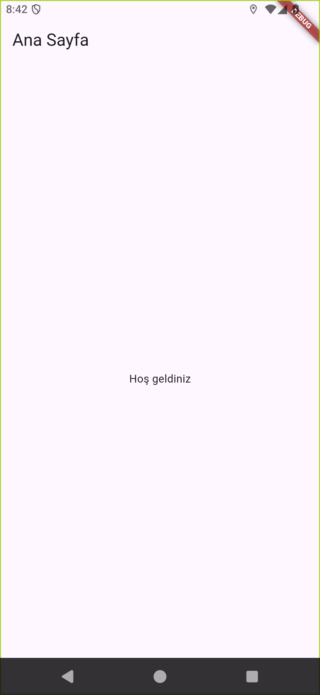

Evidence-first mobile engineering
MobiLoop MCP
Guarded tools for AI agents to build, test, inspect, fix, and retest Flutter, React Native, Android, and iOS applications with Appium.

Controlled loop
From change to verified result
- DiscoverInspect project structure and generate scenario candidates.
- BuildRun bounded lint, unit-test, and mobile build commands.
- ExerciseDrive an emulator, simulator, or device through Appium.
- VerifyCapture source, screenshots, logs, assertions, and iteration evidence.
- RepairLet the AI diagnose and patch an approved defect, then retest.
Built-in guardrails
Security testing without another scanner dependency
Secure defaults
Secure mode ignores project-local configuration by default, requires approvals for high-impact actions, pins Appium to host-controlled loopback endpoints, blocks secret paths, and resolves symbolic links before file access.
Mobile signals
security.scan_source deterministically checks source, Android manifests,
and iOS plist settings for credential, transport, storage, logging, and platform
configuration risks.
Fix and prove
Generate a test plan, make an approved fix, compare the new scan to its baseline, then apply a release gate at the selected severity threshold.
Reference